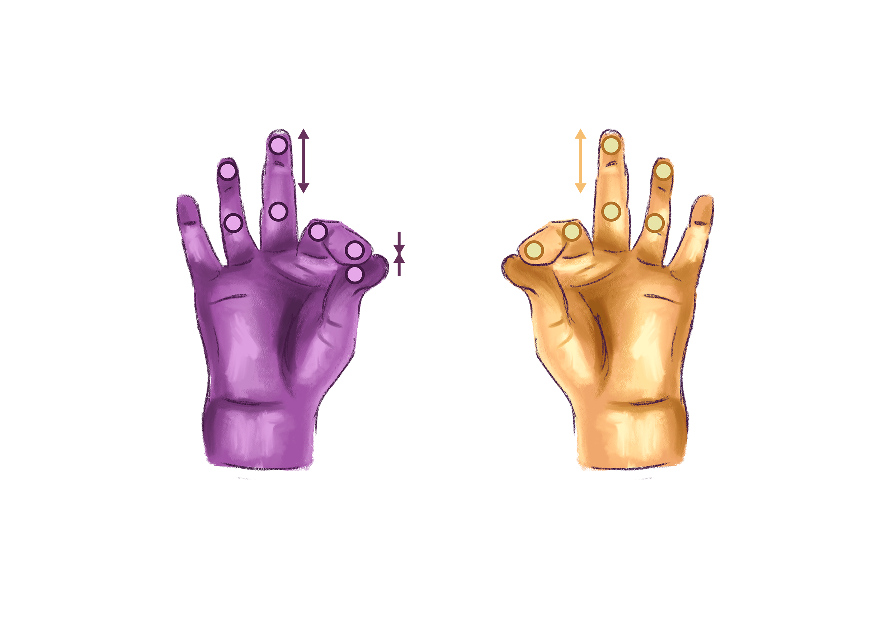

Handify Live Music Controller
Handify is an ml5 based music controller, allowing you to play with a self made track using your hand position.
To get started:
Click the play button
control the tracks with your left hand, control effects with your right hand. Both as depicted.
